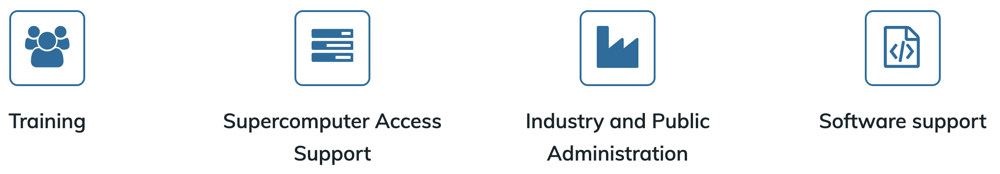

Instructor note
10 min teaching
5 min discussion
Training providers
Many training providers offer free hands-on technical workshops to help researchers, engineers, and data scientists enhance their skills and productivity. This page highlights three projects that share a common teaching approach, covering topics from beginner-level programming to advanced HPC for experts.
The Carpentries
{kind=link}
The Carpentries is an international project that comprises Software Carpentry and Data Carpentry, communities of instructors, trainers, maintainers, helpers, and supporters who share a mission to teach foundational computational and data science skills to researchers. The Carpentries teach foundational coding and data science skills to researchers worldwide.
Carpentry instructor training
ENCCS instructors are encouraged to complete the Carpentry instructor training workshop, which anyone can apply for.
This instructor training lesson presents several concepts and methods from the Carpentries approach to teaching and highlight parts that are most important for teaching ENCCS style lessons. We encourage you to further study the Carpentry lesson later and to sign up for a 2-day Carpentry intructor training workshop.
Carpentries audience
The Carpentries aims to teach computational competence to learners through an applied approach, avoiding the theoretical and general in favor of the practical and specific. Learners do not need to have any prior experience in programming. One major goal of a Carpentry workshop is to raise awareness on the tools researchers can learn/use to speed up their research.
By showing learners how to solve specific problems with specific tools and providing hands-on practice, learners develops confidence for future learning.
Novices
Carpentry learners can be qualified as novices: they do not know what they need to learn yet. A typical example is the usage of version control: the Carpentry git lesson aims to give a very high level conceptual overview of Git but it does not explain how it can be used in research projects.
Available lessons
HPC Carpentry
HPC Carpentry teaches HPC-oriented coding and data science skills to researchers and aims to bring High Performance Computing under the Carpentries umbrella. HPC Carpentry is a set of teaching materials designed to help new users take advantage of high-performance computing systems. No prior computational experience is required - these lessons are ideal for either an in-person workshop or independent study.
Available lessons:
Data Carpentry
Data Carpentry develops and teaches workshops on the fundamental data skills needed to conduct research with the mission to provide researchers with high-quality, domain-specific training covering the full lifecycle of data-driven research. Data Carpentry workshops are domain-specific, teaching researchers the skills most relevant to their domain and using examples from their type of work.
CodeRefinery
CodeRefinery is a Nordic e-Infrastructure Collaboration (NeIC) project that started in October 2016. The main goals of CodeRefinery are:
Develop and maintain training material on software best practices for researchers that already write code. The CodeRefinery lessons address all academic disciplines and try to be as programming language-independent as possible.
Provide a code repository hosting service that is open and free for all researchers based in universities and research institutes from Nordic countries.
Provide training opportunities in the Nordics using Carpentries and CodeRefinery training materials.
Articulate and implement the CodeRefinery sustainability plan.
CodeRefinery audience
CodeRefinery workshops differ from Carpentry workshops as the audience is assumed to already write code and scripts and we aim at teaching them best software practices.
CodeRefinery learners usually do not have a good overview of best software practices but are aware of the need to learn them. Very often, they know the tools (Git, Jupyter, etc.) we are teaching but have difficulties to make the best use of them in their software development workflow.
Competent practitioners
CodeRefinery learners can be qualified as competent practitioners because they already have an understanding of their needs. Novices and competent practitioners will be more clearly defined in a later section.
Available lessons
Reproducible research - Preparing code to be usable by you and others in the future
Automated testing - Preventing yourself and others from breaking your functioning code
Modular code development - Making reusing parts of your code easier
Many CodeRefinery contributors work at HPC centres, and several lessons on HPC have been developed:
ENCCS
ENCCS (EuroCC National Competence Center Sweden) is one of 33 nodes of the EuroCC project, which is funded by the European High-Performance Computing Joint Undertaking (EuroHPC-JU). As an NCC, we act as the central point of contact for HPC and related technologies in Sweden. Our mission is to empower Swedish industry, academia and the public sector to leverage HPC, AI, and HPDA efficiently and effectively.

Training is one of the main pillars of ENCCS’ activities. We have developed a large amount of public and open source lesson material and have organised, taught or contributed to over 60 online workshops since September 2020. Our training philosophy and methods are to a large extent derived from two well established educational initiatives: CodeRefinery and The Carpentries. The material presented here covers both pedagogical ideas and practical aspects which underpin the development of lesson material, organisation of online or in-person workshops and the teaching itself.
ENCCS audience
Similarly to CodeRefinery, ENCCS primarily targets competent practitioners in training workshops: participants are assumed to know what their needs are. Typically, their needs are to learn a technique or method to adapt their code to HPC, to learn novel programming languages or frameworks, or to deepen their knowledge of machine learning methods.
Available lessons
For full overview, see ENCCS lessons.
GPU programming
General HPC
Programming languages
AI/ML
Applications
Tools
Quantum computing
Recommended external resources
The lessons above do not cover all relevant topics in HPC, HPDA and AI, but ENCCS also maintains a list of recommended public training material which you can find at https://enccs.se/external-training-resources/.
Contribute to the list of external training resources
For after this workshop:
If you know of other good public training material, or if you have developed own material
that you would like to share with the world, please get in touch or
open an issue on this repository!